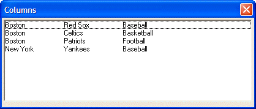

List Box O Directive {T} Operator
Syntax
{T= N [ Min_Position : Max_Position ] }
{T=$ M }
|
Argument |
Type |
Description |
|
N |
N |
The number of units (specified by the {UNITS} command) from the left margin to position the next text. |
|
Min_Position |
N |
Optional. When sliding tabs are enabled. The minimum or leftmost position the tab can take. |
|
Max_Position |
N |
Optional. When sliding tabs are enabled. The maximum or rightmost position the tab can take. |
|
M |
N |
Used to reference tabs specified by the list box F directive. The number selects a tab position. The left-most tab is 1. The next tab is 2. |
Description
The {T} operator is used to specify tabs within an owner draw (O) directive. {T=1.5:0-20} indicates a moveable tab stop whose initial position is at 1.5 inches. The tab stop can be moved in the range 0 to 20 inches. A tab definition of {T=1.5:.5-20}, for example, would indicate that when the column is resized, it cannot be moved left of the .5 inch tab position.
Example
|
tab1 = "{T=1}" tab2 = "{T=2}" data = "Boston"+tab1+"Red Sox"+tab2+"Baseball" + crlf()+\ "Boston"+tab1+"Celtics"+tab2+"Basketball" + crlf()+\ "Boston"+tab1+"Patriots"+tab2+"Football" + crlf()+\ "New York"+tab1+"Yankees"+tab2+"Baseball" + crlf() ui_dlg_box("Columns",<<%dlg% %O={@@}%.80,10data_selected^#data; %dlg%) |

See Also
Xdialog Language Directives and Operators, List Box Control Syntax
Supported By
Alpha Five Version 5 and Above